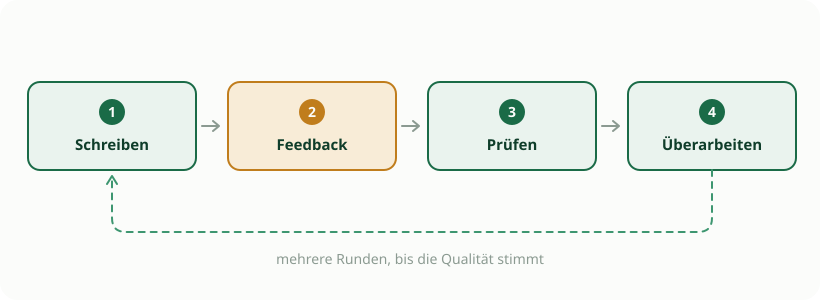
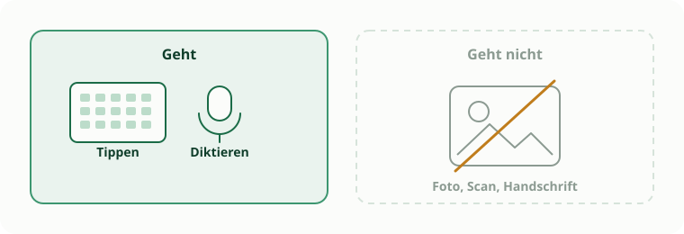

Arbeitsphase I · Vormittag
KI-Ping-Pong im Fachunterricht
Ein Lernszenario für den fobizz-Klassenraum bauen: textbasiert, datenschutzkonform, und so, dass die Köpfe arbeiten.
Ihr baut ein Unterrichtselement, in dem die KI eure Klasse nicht bedient, sondern fordert. Ping-Pong nennen wir das: Die Lernenden schreiben etwas, die KI spielt kriterienbasiertes Feedback zurück, sie überarbeiten. Klingt simpel. Die Kunst liegt darin, dass die KI nachfragt und die Lösung für sich behält.

Was am Ende stehen soll
- ein fertig eingerichteter fobizz-Klassenraum mit eurem Fach-Chatbot,
- ein Schüler-Arbeitsauftrag, der das Ping-Pong wirklich in Gang setzt,
- ein kurzer Eintrag im Sammel-Template, damit die anderen davon profitieren.
So geht ihr vor
- 1
Thema finden
15 MinSucht euch eine Stunde, in der die Lernenden etwas Sprachliches produzieren: eine Begründung, eine Deutung, einen in Worten erklärten Rechenweg. Fällt euch spontan nichts ein, ist das normal. Dafür gibt es das Themen-Rezept.
- 2
Klassenraum einrichten
20 MinBei fobizz anmelden, neuen Klassenraum anlegen, einen Chatbot fürs Fach erstellen. Den System-Prompt schreibt ihr mit dem Baukasten. Der wichtigste Teil sind die Guardrails. Ohne sie rückt der Bot die Lösung heraus, sobald jemand freundlich genug fragt.
- 3
Eingabeweg klären
5 MinGenau zwei Wege sind erlaubt: Tippen für alles am Gerät und Diktieren über die Mikrofon-Taste. Am Windows-Rechner geht das mit Windows-Taste und H.

- 4
Ablauf für die Klasse bauen
15 MinFormuliert den Auftrag in Runden: Erstentwurf schreiben, im Klassenraum abgeben und das Feedback lesen, die Hinweise kritisch prüfen, überarbeiten. Wenn Zeit ist, mehrere Runden.
- 5
Gegenseitig testen
20 MinTauscht mit einer anderen Gruppe, am besten aus einem fremden Fach. Die merkt sofort, wenn eure Anweisung nur für Eingeweihte verständlich ist. Gebt ruhig absichtlich schwache Entwürfe ein, dabei zeigt sich am meisten. Verrät der Bot die Lösung? Bleibt er beim Fach? Versteht auch ein Fachfremder das Feedback?
Ergebnisse sichern
Tragt vier Dinge ins Sammel-Template ein: Fach, Jahrgang und Thema; den Wortlaut eures System-Prompts; den Eingabeweg der Lernenden; und eure ehrliche Einschätzung, ob das in einer echten Stunde funktioniert.